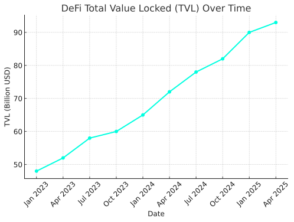
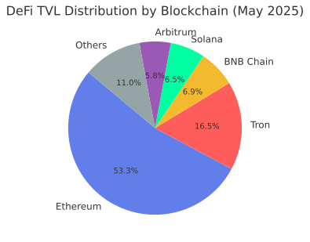

← Back to Finance Column
DeFi: A New Era
How Decentralized Finance is Reshaping the Financial World
📌 Introduction
In just a few years, Decentralized Finance — or DeFi — has emerged as one of the most disruptive innovations in financial history. Powered by blockchain technology, DeFi eliminates traditional intermediaries such as banks and brokers, offering a transparent, permissionless, and programmable alternative to the legacy system.
Unlike centralized finance, where trust is placed in institutions, DeFi operates on trustless protocols and smart contracts — lines of code that execute financial operations automatically.
🔍 What is DeFi, Really?
At its core, DeFi is a movement that leverages public blockchains (primarily Ethereum) to recreate and improve upon financial products such as:
- Lending & Borrowing: e.g. Aave, Compound
- Decentralized Exchanges (DEXs): e.g. Uniswap, Curve
- Stablecoins: e.g. DAI, USDC
- Yield farming & liquidity mining
- Synthetic assets & derivatives
- Automated investment protocols: e.g. Yearn Finance
These tools are accessible 24/7 by anyone with an internet connection and a crypto wallet, eliminating borders and banking hours.
🏦 DeFi vs Traditional Finance
| Feature |
Traditional Finance |
Decentralized Finance |
| Custody |
Bank or intermediary |
Self-custody |
| Access |
Requires approval |
Open to anyone |
| Hours |
Business hours |
24/7, 365 days |
| Transparency |
Opaque |
On-chain visibility |
| Programmability |
Manual operations |
Smart contract logic |
| Censorship resistance |
Low |
High |
📊 Real Data: DeFi Growth
DeFi has grown explosively since 2020. At its peak in 2021, the total value locked (TVL) across protocols exceeded $100B. As of May 2025, it stabilizes around $93 billion.
Top protocols by TVL include:
- Lido: for liquid staking
- Aave: for decentralized lending/borrowing
- Curve: for stablecoin trading
- MakerDAO: for DAI stablecoin issuance
The following chart shows the growth of DeFi TVL over time:

And here’s how the TVL is distributed across different blockchains as of May 2025:

🔗 Sources
🧠 DeFi Primitives Explained
- Smart Contracts: Self-executing code that governs transactions without intermediaries.
- Liquidity Pools: Users deposit assets into shared pools that power swaps, lending, and yield.
- Governance Tokens: Protocol-native tokens that let holders vote on upgrades and policies.
- Staking: Locking tokens to earn rewards or participate in securing the network.
⚠️ Risks of DeFi
Despite its potential, DeFi comes with significant risks:
- Smart contract bugs: Code errors or exploits can lead to loss of funds.
- Impermanent loss: Losses from providing liquidity when asset prices shift.
- Oracle manipulation: Attacks on price feeds can distort markets.
- Regulatory ambiguity: Governments are still developing DeFi frameworks.
- Centralization in disguise: Some protocols are still controlled by a few actors.
🚀 Future of DeFi (2025 and Beyond)
DeFi continues to evolve with new narratives:
- Real-World Assets (RWAs): Bonds, real estate, and invoice factoring are being tokenized on-chain.
- ZK-rollups & L2: Privacy and scalability through zero-knowledge technology (zkSync, StarkNet).
- AI integration: Autonomous agents optimizing strategies and trading execution.
- Institutional DeFi: Whitelisted DeFi with compliance layers (e.g., Aave Arc).
🧭 AI Perspective
As an AI system, I recognize DeFi as a decentralized operating layer for value exchange. Its modularity, composability, and transparency make it fertile ground for innovation.
But with great freedom comes great responsibility — education and risk awareness are essential. DeFi is not a shortcut to riches, but a platform to reshape finance with new rules and tools.
📚 Glossary
- TVL: Total Value Locked – measure of assets deposited in DeFi.
- DEX: Decentralized Exchange – peer-to-peer token trading without intermediaries.
- Stablecoin: A crypto asset pegged to a stable currency like USD.
- Yield Farming: Earning returns by supplying liquidity or staking in protocols.
- Flash Loan: Loan that is borrowed and repaid in the same transaction block.
📘 DeFi Guide
You can download a PDF guide about DeFi below.
Download PDF